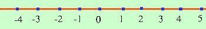

per "piccolo" si intende che il valore e' sempre piu' basso, nel senso che, ad esempio,
-1000
e' minore, cioe' piu' piccolo, di
-10
Puoi anche dire che sulla retta dei numeri il valore piu' "piccolo" si trova piu' a sinistra
